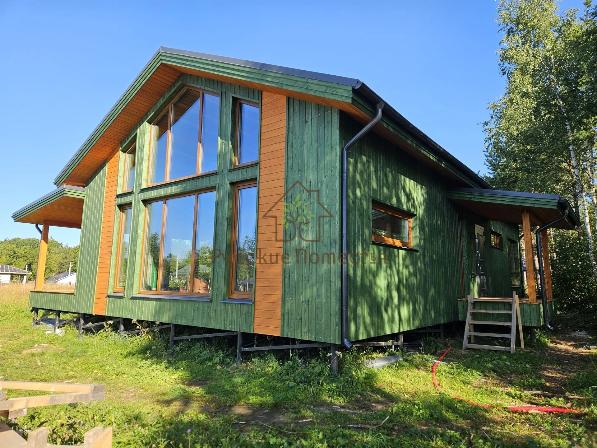

Построенные домаКаркасные дома под ключ от производителя
Строим дома в Санкт-Петербурге и Ленинградской области от 2 500 000 руб.
Фиксируем цену договором.
Гарантия до 25 лет.
Получите каталог с планировками, ценами и комплектациями, чтобы выбрать дом под свой бюджет.
13 лет в загородном строительстве.
Более 120 построенных домов.